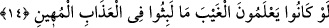

EY DÂVUD ÂİLESİ!
ŞÜKREDİN
12. Sabah gidişi bir aylık mesafe, akşam dönüşü yine bir aylık mesafe olan
rüzgârı da Süleyman’a (onun emrine) verdik ve onun için erimiş bakırı
kaynağından sel gibi akıttık. Rabbinin izniyle cinlerden bir kısmı, onun önünde
çalışırdı. Onlardan kim emrimizden sapsa, ona alevli azabı tattırırdık.
13. Onlar Süleyman’a kalelerden, heykellerden, havuzlar kadar (geniş)
leğenlerden, sâbit kazanlardan ne dilerse yaparlardı. Ey Dâvud ailesi! Şükredin.
Kullarımdan şükreden azdır!
14. Süleyman’ın ölümüne hükmettiğimiz zaman, onun öldüğünü, ancak değneğini
yiyen bir ağaç kurdu gösterdi. (Sonunda yere) yıkılınca anlaşıldı ki cinler gaybı
bilselerdi, o küçük düşürücü azap içinde kalmazlardı.
“Sabah gidişi” güneşin doğmasından gündüzün yarı vakti olan güneşin zevâline kadar
esmesi ve seyri, insanların binek hayvanlarıyla katettiği “bir aylık mesafe, akşam
dönüşü” gündüzün ortasından geceye kadar esmesi ve seyri “yine bir aylık mesafe
olan rüzgârı” sabâ rüzgârını “da Süleyman’a (onun emrine) verdik.”
Râğıb der ki: “
(ay)”, hilalin görülmesiyle başlayıp bittiği bilinip tanınan
müddettir. Yahut güneşin bir noktadan tekrar o noktaya kadar deverânının on iki
cüzünden bir cüzdür.
Yâni, Süleyman (a.s.) bir günde binekli birinin iki ayda kat’ettiği mesâfeyi katederdi.
Hasan Basrî (r.h.)’tan rivayet edildiğine göre Süleyman (a.s.) ordusuyla yaygılar
üzerinde Şam’dan yola çıkar, Istahr’da öğle vakti istirahat eder/kaylûle yapardı. İki
belde arası ise süratli bir süvari için bir aylık mesafedir. Istahr, Fars beldelerinden bir
beldedir (İran’ın güneyinde eski bir şehir). Bu şehri Süleyman (a.s.) için “cinlerden bir